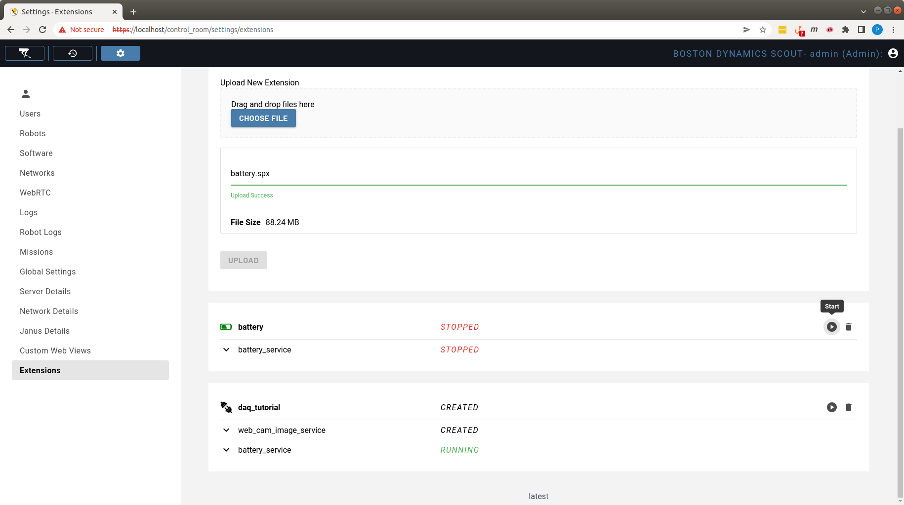

Running Custom Applications with Spot
Spot’s computing power can be extended through additional computation payloads mounted on the robot. Boston Dynamics offers CORE I/O computation payloads, but users can attach other types of computation payloads as well. This document describes how to configure software to run on these computation payloads. Most instructions describe steps on how to manage custom software on the CORE I/O, but these steps are applicable to other computation payloads as well.
The purpose of computation payloads is to run custom software applications on the robot that interact with the robot software system and the other payloads attached to Spot. For CORE I/O, we suggest using the provided Extensions framework to install, configure and run custom software. The suggested approach to develop, test and deploy software on computation payloads is as follows:
Implement and test application in a development environment, such as a development computer. In this case, the development computer connected to Spot’s WiFi acts as the computation payload for the robot. Testing in the development environment allows for quick iterations and updating of the application code.
Dockerize the application and test the docker image with the application on the development environment. The change in this step compared to the previous one is to run the application inside a docker container, rather than on the host OS of the development environment. This step verifies that the application works correctly in a containerized environment, and it acts as a stepping stone to the final step below. The section Create Docker Images described how to create and test the docker images in the local development environment.
If targetting the CORE I/O payload, combine all docker containers with a docker-compose configuration file and package everything into a Spot Extension, as described in the Manage Payload Software in CORE I/O section.
Deploy and manage the Spot Extension in the CORE I/O payload (also described in the section linked above). Running the dockerized application on a computation payload attached to Spot removes the need for WiFi connectivity between Spot and a stationary computation environment, improving Spot’s autonomy.
To manage the docker images on any other compute payload, please refer to the Command-line Configuration section.
Multiple Spot SDK examples support dockerization and running as docker containers. The main examples are listed below, but all the other examples can be easily configured to run as docker containers by duplicating the docker configuration in the examples below.
Installing Docker Engine
See the Docker Engine installation instructions for instructions on how to install Docker Engine on your development environment.
Note: if you have previously installed Docker Engine using a package manager, you may need to remove the old version before installing the new version. Please follow the instructions in the Docker Engine installation instructions for instructions on how to remove the old version. If you find that docker buildx does not function properly, you may need to remove the old version of Docker Engine.
Create Docker Images
After implementing and testing the application on the development environment, the first step is to create a docker image with the software application and its dependencies. Docker containers are dependent on images and use them to construct a run-time environment and run an application. The instructions to create a docker image are specified in a file, usually named Dockerfile. The Dockerfile specifies what base docker image to start from, what additional software and libraries to install on top of the base image, and what software needs to be run when the container starts. A variety of Spot SDK examples contain a Dockerfile.
The Dockerfile files in the SDK examples contain instructions to create x86/AMD-based Ubuntu docker images. On top of Dockerfile files, SDK examples also contain Dockerfile.l4t for creating ARM-based Ubuntu docker images for the CORE I/O payloads.
When writing Dockerfiles for images targeted for the CORE I/O, if using Nvidia Docker images as a base, ensure that the tag matches the version of Jetpack running on the CORE I/O. As of 3.3.0, the CORE I/O is running JetPack 4.6.1 (L4T R32.7.1).
Note: OpenCV is commonly used for processing image data on the CORE I/O. By Default, most installations of OpenCV do not have CUDA support. Nvidia’s l4t-ml container provides a version of OpenCV with CUDA support built-in, but is also fairly large. To build a more lightweight container with CUDA support in OpenCV, follow the instructions provided here, replacing BASE_IMAGE and OPENCV_VERSION with the desired versions (see above).
Note: Most of the Dockerfiles in the SDK examples use the default user provided by the base image. This user is usually the root user and is not recommended to be used for running applications on CORE I/O. In most cases, it is good practice to change this to a non-root user with limited privileges.
Running as the root user bypasses certain limitations imposed on non-root users around resource utilization. This means that unintentional memory or thread leaks in a program running as the root user can crash the entire system or cause other undefined behavior.
The Dockerfile files in the SDK examples do not change the user, but the user can be changed by adding the following lines to the Dockerfile:
RUN useradd -ms /bin/bash <username>
USER <username>
Build Docker Images
This section describes the steps to create and run a docker image on the development environment. Docker images created to run on the same architecture as the development environment can be created with the simple docker build commands listed below.
An x86/AMD docker image can be built on an x86/AMD development environment using the following commands, where {IMAGE_NAME} represents the desired docker image name.
sudo docker build -t {IMAGE_NAME} .
An ARM docker image can be built on an ARM development environment using the following commands, where {IMAGE_NAME} represents the desired docker image name.
sudo docker build -t {IMAGE_NAME} -f Dockerfile.l4t .
In order to create docker images on the development environment for a different architecture, first run the following commands:
sudo apt-get install -y qemu qemu-user-static
docker buildx create --use --name multiarchbuilder
mkdir -p prebuilt # this is needed due to limitations in docker buildx
sudo docker run --rm --privileged multiarch/qemu-user-static --reset -p yes
The run command needs to be rerun if the development environment restarts. Then, to build the docker images, we need to pass the --platform argument to the docker build commands shown above.
An ARM docker image can be built on an x86/AMD development environment using the following commands, where {IMAGE_NAME} represents the desired docker image name.
sudo docker build -t {IMAGE_NAME} --platform linux/arm64 -f Dockerfile.l4t .
All the docker build commands shown above create a docker image that can be used on the development environment with docker commands. For example, sudo docker image ls lists the docker images available for use. Finally, to save the docker image to a tgz file, run the command:
sudo docker save {IMAGE_NAME} | pigz > {IMAGE_NAME}.tgz
Test Docker Images Locally
The next step after creating the docker image is to test the container on a local development environment first. To start a docker container and its configured software application, run:
sudo docker run -it --network=host {IMAGE_NAME} {ROBOT_IP} {APPLICATION ARGUMENTS}
where:
{IMAGE_NAME} represents the name of the docker image as specified in the build step.
{ROBOT_IP} represents the IP of the Spot robot (
192.168.80.3if connected to robot’s wifi).{APPLICATION ARGUMENTS} represents any additional arguments the application that runs in the docker container takes as input. Most software applications that communicate with the services running on the robot will need the following arguments
--guid {PAYLOAD_GUID} --secret {PAYLOAD_SECRET} --host-ip {LOCAL_IP}. Some software applications might use the--username\--passwordcombination to authenticate with the robot instead of--guid\--secretThese arguments represent:{PAYLOAD_GUID} represents the payload GUID. Refer to the Python payload registration code example in the Spot SDK for how to register a massless payload and use the GUID of the example payload for testing. For software running on dedicated payloads, such as on CORE I/O or other computation payloads, we recommend using the
GUIDof that computation payload.{PAYLOAD_SECRET} represents the payload secret. Refer to the Python payload registration code example in the Spot SDK for how to register a massless payload and use the secret of the example payload for testing. For software running on dedicated payloads, such as on CORE I/O or other computation payloads, we recommend using the
secretof that computation payload.{LOCAL_IP} represents the IP of the platform where the docker is running.
In order to run a docker image created for a different architecture, add the --platform argument to the docker run command. For example, to run an ARM-based docker image on an x86/AMD development environment, run the command:
sudo docker run -it --platform linux/arm64 --network=host {IMAGE_NAME} {ROBOT_IP} {APPLICATION ARGUMENTS}
Ports For Incoming Traffic
Both the CORE I/O and the Scout platforms uses firewall rules that control the ports on which incoming traffic is allowed. If a custom application needs to open a port for incoming traffic, for example when hosting a server that external clients can connect to, it must choose a port from within the port ranges below. Docker’s host networking mode is used to simplify networking and allow deployed containers to communicate with each other. The port ranges below are allowed to accept incoming traffic on the host networking stack.
Allowed Port Ranges
-------------------
TCP: 21000-22000 (except 21443 on CORE I/O which is reserved for an internal use case)
UDP: 21000-22000
Manage Payload Software in CORE I/O
This section describes two ways to manage docker containers on a computation payload, using CORE I/O extensions or command-line tools. Using CORE I/O Extensions is the recommended approach for any release software intended to be used on multiple CORE I/O’s.
CORE I/O Extensions Configuration
Extensions are software packages or static files introduced in 3.2 that can be installed or simply uploaded in CORE I/O or Scout platforms.
Configured as software packages, Extensions provide the functionality for external developers to easily install applications onto CORE I/O and Scout platforms. On the CORE I/O, these software packages can integrate a newly-mounted payload with the Spot API, or not be associated with any payload functionality at all, such as uploading data to an AWS bucket.
Extensions can also simply be static files that developers need to upload into CORE I/O or Scout platform. This configuration supports two important use cases:
It allows the developers to split their Extensions into a smaller Extension with the software components that needs to be updated frequently and one or more larger Extensions with static files needed by the Extension with the software component. This configuration simplifies the process of updating Extensions by decoupling static large files from the frequently-updatable files and installing them once, or less frequently.
It allows the developers to split their Extensions into a generic software package that is identical for all customers, and separate Extensions with configuration files that are applicable to one of a subset of customers. This configuration simplifies the process of installing customer-specific Extensions by maintaining the common part of the package in one Extension and the customer-specific configuration in another Extension.
Helper Scripts
In v4.0, two scripts were added to the Extensions example to help with creating software package extensions in the structure described below. The generate_extension_data.py script takes in a saved Docker image and generates basic manifest.json and docker-compose.yml files described below. The build_extension.py script takes in all of the files in the structure below and outputs a valid Extension file that can be installed onto the CORE I/O.
Extension Structure
An Extension is a set of docker images configured with a docker-compose yaml configuration file. Extensions are structured as a tgz file with an .spx file extension and contain the following files:
manifest.jsonfile with metadata about the ExtensionList of docker images
docker-compose.yml file
Icon file shown in the web portal
Udev rules file to install in the CORE I/O OS if the Extension is associated with a hardware payload to be attached to CORE I/O.
Other files needed by the software or the udev rules included in the Extension
The name of the spx file represents the name of the extension.
Manifest file
The manifest.json file is the Extension parameterization file with the following parameters:
description: String with a short description of the extension
version: Version of the extension
icon: Name of the file included in the extension that should be used as the icon for the extension
udev_rules: Name of the udev file included in the extension that contains the updated udev rules to install in host OS
images: Optional list of tgz file names included in the extension that represent the docker images to load for running the extension. Parameter is omitted if the images are available from a public location, such as dockerhub.
Docker Images
The docker images listed in the images field of the manifest.json file also need to be included in the Extension. These are the docker images that contain the software components to run as part of the extension. The inclusion of docker images in the Extension is optional if the images are available from a public source, such as dockerhub. The Extension setup could also contain a mix-and-match of public and non-public images. In that case, the images field in the manifest.json file would include only the non-public images included in the Extension, and the docker-compose rules would specify all images (public and non-public).
Docker Compose YAML configuration file
The docker-compose.yml file contains instructions for managing the docker images in the Extension. The “docker-compose” tool is an industry standard to support the management of multiple pieces of software packaged together.
Other files
Extensions can also include the following files:
Icon file: Optional image file with the icon to show for the extension in the UI. The icon filename is specified in the
iconfield in themanifest.jsonfile. If omitted, a generic icon will be used for the extension.Udev rules file: Optional file with udev rules to copy to host OS /etc/udev/rules.d in order to support devices connected to Spot platform as a requirement to run the Extension. The udev filename is specified in the
udev_rulesfield in themanifest.jsonfile. Udev rules are ignored in Extensions installations in Scout.Any other files needed to run the extension: The creators of the Spot Extensions can include any other files in the extension bundle that is necessary for the software applications in the extension to run.
Extension Management
Create Extension
Once the files described in the section above are created, they can be packaged into an Extension file by simply tar-ing and zipping them into an spx file. With all the files contained in a folder, run the following command from that folder:
tar zcfv {EXTENSION_NAME}.spx *
The * in the command above does not include hidden files, so they need to listed in the command individually, such as:
tar zcfv {EXTENSION_NAME}.spx * .hidden_file1 .hidden_file2
Install Extension Using Web Portal
Extensions can be installed from the Extensions page by drag-and-dropping the Extension file onto the “Upload New Extension” subpanel, as shown in the video below:
Extensions can also be installed by clicking the “Choose File” button, and selecting the Extension file manually in the File browser window that opens up.
Extensions need to have a unique name in the system. The installation of an Extension first uninstalls an existing Extension with the same name. Locally, the Extensions are installed in the folder /data/.extensions/, and each Extension is installed in a separate folder in that location, with the folder name being the Extension name.
For Extensions without udev rules, this is the only step needed for installation. For Extensions with udev rules, the udev rules will generally be triggered when the Extension is installed if the device is plugged in. This may not always apply. If this does not happen, the udev rules can be manually triggered by performing the following steps:
After installing the Extension, plug in the device. This will execute the udev rule included in the Extension.
Start the Extension manually in the CORE I/O web portal by clicking the “Start” button.
Install Extension Using a USB Drive
For cases when the Extension has a very large size, users can also install the Extension from a USB drive attached to the CORE I/O. On the command-line, simply untar the spx Extension file in the folder /data/.extensions/ using the command tar xzfm {PATH_TO_SPX_FILE} -C /data/.extensions/{EXTENSION_NAME}. Then, go to Extensions tab in the web portal and start the Extension manually by pressing the “Start” button.
If the extension contains udev rules, those will need to be copied to /persist/udev/rules.d/ and reloaded manually with sudo udevadm control --reload-rules and triggered with sudo udevadm trigger
Monitoring
The Extensions page shows the status of each Extension installed in the system, as well as the status of all the docker containers in each Extension. The status of a container or an extension can be one of the following values:
CREATED
RESTARTING
STOPPED
RUNNING
For the docker container statuses, the values listed above are a direct mapping of the status reported by the docker ps command for the container:
CREATED: The reported status contains the string “Created”
RESTARTING: The reported status contains the string “Restarting”
STOPPED: The reported status contains the string “Stopped”
RUNNING: All other statuses reported in the format “Up for X seconds”
For the full Extension statuses, the values are computed as:
STOPPED: Any of the containers in the Extension report a STOPPED status
CREATED:
No containers in the Extension, or
No stopped containers and one of the containers in the Extension report a CREATED status
RESTARTING: No STOPPED or CREATED containers and one of the containers in the Extension report a RESTARTING status
RUNNING: All containers in the Extension report a RUNNING status
Access Extension Logs
Users can view logs from the containers in the Extensions page by clicking the down-arrow button on each container. The expanded text window shows the most recent logs reported by the application running in the container. Users can scroll to the bottom of the text window, which triggers an automatic update of the logs in the text window, as reported by the application running in the container. Users can also copy the whole text displayed in the window, or download the full logs from the container using the two buttons in the top right corner of the Extension view, as shown in the video below:
Stop Extension
Extensions can be temporarily stopped from running by clicking the Stop button at the top-right corner of the Extension view, as shown in the screenshot below for the battery Extension:
Once the Extension is stopped, the “Stop” button converts to a Start button and the Extension could be manually started by clicking it, as shown in the screenshot below for the battery Extension: 
Remove Extension
To uninstall and remove an extension, click the “Trash Bin” icon for the Extension, as shown in the video below:
Command-line Configuration
Users can also manage their applications manually on the CORE I/O, or other compute payloads, by ssh-ing into it (ssh -p 20022 192.168.80.3 from the robot’s WiFi) and starting their applications using the options described below. The Extensions functionality included in CORE I/O and Scout platforms simplify the process of managing applications on these platforms, but users can also use the instructions below for debugging and testing purposes.
Run Application(s) Directly on Compute Payload
Users can copy their application to the CORE I/O:
scp -r -P 20022 {APPLICATION_FILES} spot@192.168.80.3:
and run them on the command line. python3 is pre-installed in the CORE I/O.
Run Application(s) as a Docker Container
To run the docker container on CORE I/O, first copy the docker image tar file and then manually run it on the computation payload. To copy the docker file, run:
scp -r -P 20022 {IMAGE_NAME}.tar spot@192.168.80.3:
Then, ssh onto the computation payload, and load or import the docker file locally. For images created through the single architecture workflow, load the docker image with the command:
sudo docker load -i {IMAGE_NAME}.tar
For images created with buildx through the multiple architecture workflow, import the docker image with the command below, where {VERSION} is a user specified extension for the image:
sudo docker import {IMAGE_NAME}.tar {IMAGE_NAME}:{VERSION}
To run the docker container and the software application in it, execute:
sudo docker run -it --network=host {IMAGE_NAME} 192.168.50.3 {APPLICATION ARGUMENTS}
with the arguments as described in the section Test Docker Images Locally. Note, the host-ip in the example command is currently set for a CORE I/O attached to the rear port and the robot hostname is needed for a service running on the CORE I/O communicating with the on-board software.
The manual configuration described in this section does not persist across reboots without additional configuration.
Run Applications with docker-compose
Users can execute a combination of docker images on the CORE I/O using docker-compose, which comes pre-installed in the CORE I/O. Using the commands shown in the section above, users can copy the docker images and the docker-compose YAML file to the CORE I/O and load the docker images individually. Then, they can start the docker images by running the docker-compose command:
sudo docker-compose -f {PATH TO DOCKER COMPOSE YAML FILE} start